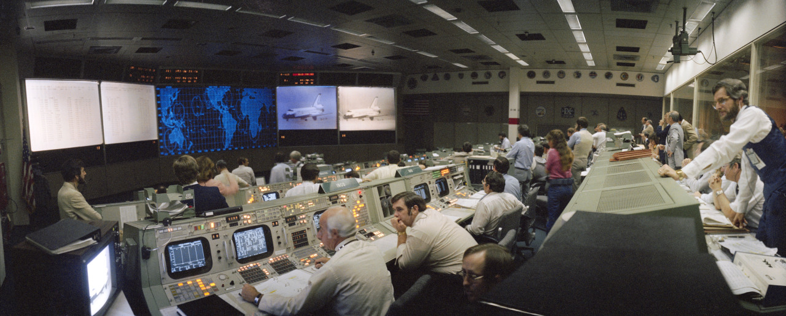

Heat shield impact site of NASA’s Mars Exploration Rover Opportunity


Somewhere between the source and me the caption to this set was lost! So I’m adding it again!
Click the link to Vide-Uhhh! to see this in action live!
The video camera is plugged into the VCR, allowing it to record itself being poked and prodded.
GIF’d version of Vide-Uhhh!(2005)
This set is several levels of perfect.
Poor little VCR :(

14 April 1981
An overall view of the mission operations control room (MOCR) in the Johnson Space Center’s Mission Control Center during the landing phase of the STS-1 mission. The Columbia can be seen on large monitor in upper right at Dryden Flight Research Center. Flight controller Ed Fendell, left foreground, mans the integrated communications systems engineer (INCO) console.

13 April 1970
Overall view of the Mission Operations Control Room in the Mission Control Center at the Manned Spacecraft Center, during the fourth television transmission from the Apollo 13 spacecraft while enroute to the Moon.
Eugene F. Kranz (foreground, back to camera), one of four Apollo 13 Flight Directors, views the large screen at front of MOCR. Astronaut Fred W. Haise Jr., lunar module pilot, is seen on the screen. The fourth television transmission from the Apollo 13 mission was on the evening of April 13, 1970.
Shortly after the transmission ended and during a routine proceedure that required the crew to flip a switch that stirred one of the cryogenic liquid oxygen tanks, an explosion occurred that ended any hope of a lunar landing and jeopordized the lives of the three crew members.

24 July 1969
Overall view of the Mission Operations Control Room (MOCR) in the Mission Control Center (MCC), Building 30, Manned Spacecraft Center (MSC), at the conclusion of the Apollo 11 lunar landing mission. The television monitor shows President Richard M. Nixon greeting the Apollo 11 astronauts aboard the USS Hornet in the Pacific recovery area. Astronauts Neil A. Armstrong, Michael Collins, and Edwin E. Aldrin Jr. are inside the Mobile Quarantine Facility (MQF).

1 June 1977
Personnel inside the data processing center for COBRA DANE, an intelligence-gathering phased-array RADAR system specially constructed to monitor Soviet ballistic MISSILE testing on Siberia’s Kamchatka Peninsula.